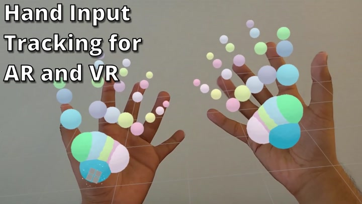
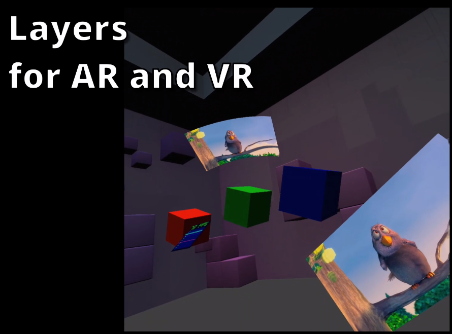

New üé¨ from the #WebMachineLearning #W3CWorkshop: "Paddle.js - #MachineLearning for the Web", by Ping Wu https://youtu.be/_I_j-J4gg1c #PaddleJS #WebAI
https://twitter.com/w3cdevs/status/1311606788660162565TPAC (aka Technical Plenary & Advisory Committee #w3cTPAC) is @w3c's biggest annual series of events bringing together W3C groups, etc. for exciting and coordinated work https://www.w3.org/2020/10/TPAC/
üóìÔ∏è October@VirtualW3C: TPAC month! https://www.w3.org/participate/eventscal.html
https://twitter.com/w3cdevs/status/13116338559300771862 Oct.: Last session for the distributed online @w3c/@opengeospatial #W3CWorkshop series on #Maps4HTML dedicated to Web #developers priorities - https://www.w3.org/2020/maps/ - sponsored by @NRCan
https://twitter.com/w3cdevs/status/1311633860065714176.@w3c's first virtual #w3cTPAC event helps Working, Interest, Business and Community Groups to schedule their online meetings anytime from September to December 2020. See which group meets and when in this calendar view: https://www.w3.org/2020/10/TPAC/group-schedule.html#calendar
https://twitter.com/w3cdevs/status/131163385812375142412-16 Oct.: #w3cTPAC Joint group meetings week, dedicated to discussions between groups sot to better coordinate the #WebStandards work: https://www.w3.org/2020/10/TPAC/group-schedule.html#schedule
https://twitter.com/w3cdevs/status/13116338638280253452 Oct.: @hdv shows how your CMS is an #accessibility assistant at the #WPAccessibilityDay #WPAD2020 #ATAG
https://wpaccessibilityday.org/talks/your-cms-is-an-accessibility-assistant/
https://twitter.com/w3cdevs/status/131163386186507878526-30 Oct.: #w3cTPAC #BreakOutSessions week on a wide variety of topics relating to @w3c activities: https://www.w3.org/2020/10/TPAC/breakout-schedule.html Some of these breakouts are open to the public. Check them out! https://twitter.com/w3cdevs/status/1310575554240876544
https://twitter.com/w3cdevs/status/131163386770768691220 Oct.: @w3c member-only live session (Advisory Committee - AC) meeting that focus on strategic issues facing the Consortium and future directions envisioned by the membership and staff #w3cTPAC
https://twitter.com/w3cdevs/status/1311633866000662528New üé¨ from the #WebMachineLearning #W3CWorkshop: "ml5.js: Friendly Machine Learning for the Web", by @yining_shi https://youtu.be/QOCb_Yysg4M #ml5js #JavaScript #TensorFlowJS #MachineLearning
https://twitter.com/w3cdevs/status/1311969174692851714New üé¨ from the #WebMachineLearning #W3CWorkshop: "Pipcook, a front-end oriented #DL DL framework", by Wenhe Eric Li https://youtu.be/aAB541Ol7f8 #DeepLearning #AI #TensorFlowJS #MachineLearning
https://twitter.com/w3cdevs/status/1312331560297787392New üé¨ from the #WebMachineLearning #W3CWorkshop: "#MachineLearning on the Web for content filtering applications", by @shoniko https://youtu.be/oP-6Fgkz2_0 #DOM #TensorFlowJS #JavaScript #AI #GraphConvolutionalNetworks
https://twitter.com/w3cdevs/status/1312512756617302023New üé¨ from the #WebMachineLearning #W3CWorkshop: "Exploring unsupervised image segmentation results", by @pmigdal & Bart≈Çomiej Olechno https://youtu.be/ea4KKD2l9eI #DeepLearning #RMarkdown #D3js #MachineLearning
https://twitter.com/w3cdevs/status/1313097644508680192New üé¨ from the #WebMachineLearning #W3CWorkshop: "Mobile-first web-based #MachineLearning", by @_josh_meyer_ and @lindyrocky https://youtu.be/gyjxCC6_O40 #AI
https://twitter.com/w3cdevs/status/1313418729196326912New üé¨ from the #WebMachineLearning #W3CWorkshop: "We Count: Fair Treatment, #Disability and #MachineLearning", by @juttatrevira https://youtu.be/3CjliYeqjrM #AI #privacy #ethics
https://twitter.com/w3cdevs/status/1313781113341521920New üé¨ from the #WebMachineLearning #W3CWorkshop: "#AI (#MachineLearning): Bias & Garbage In, Bias & Garbage Out", by @ClearHelper https://youtu.be/DdUgRoTKiik #Disability #fairness
https://twitter.com/w3cdevs/status/1314143501119041536New üé¨ from the #WebMachineLearning #W3CWorkshop: "#Cognitive #Accessibility and #MachineLearning", by @SeemanLisa and Joshue O‚ÄôConnor https://youtu.be/_EsXc5Afuv4 #inclusion #disability
https://twitter.com/w3cdevs/status/1314505891568181250New üé¨ from the #WebMachineLearning #W3CWorkshop: "Interactive #ML - Powered Music #applications on the Web", by @teropa https://youtu.be/TmQl5s3lP9s #MachineLearning #TensorFlowJS #MagentaJS #WebAudio
https://twitter.com/w3cdevs/status/1314868276627828737New üé¨ from the #WebMachineLearning #W3CWorkshop: "Wreck a Nice Beach in the #Browser: Getting the Browser to Recognize #Speech", by @KellyJayDavis https://youtu.be/OI2sHJ12Us0 #WebSpeech #API #Privacy #MachineLearning
https://twitter.com/w3cdevs/status/1315230663243685888New üé¨ from the #WebMachineLearning #W3CWorkshop: "#Privacy focused #MachineTranslation in #Firefox", by @XapaJIaMnu https://youtu.be/nuiFXBS0CJo #multilingual #MachineLearning
https://twitter.com/w3cdevs/status/1315593049632772097Last year, @MDN launched the 1st edition of this #survey designed in collaboration with browser vendors and @w3c. That 2019 edition collected data from nearly 30,000 developers from which @atopal presented early results during TPAC2019: https://twitter.com/w3cdevs/status/1183767368813686784
The 2nd edition of the MDN Web Developer Needs Assessment is out! It is is actively used to prioritize browser roadmaps. We invite Web #developers and #designers to let browser vendors and the Web standardization community know what needs to change and what you are happy with https://twitter.com/w3c/status/1315672322062381056
https://twitter.com/w3cdevs/status/1315682315759124481The MDN browser compatibility report was issued last month, and it identifies specific issues and possible solutions - Read the full 120-page report: https://mdn-web-dna.s3-us-west-2.amazonaws.com/MDN-Browser-Compatibility-Report-2020.pdf (pdf, 1.9MB)
https://twitter.com/w3cdevs/status/1315682319747952640The major identified pain points were related to browser compatibility: having to support specific browsers, making a design look/work testing across browsers, etc. https://twitter.com/MozDevNet/status/1308430517897957376
https://twitter.com/w3cdevs/status/1315682317772500992First results of this new survey will be discussed at one of the #w3cTPAC public breakout sessions in 2 weeks:
https://www.w3.org/wiki/TPAC/2020/SessionIdeas#MDN_Developer_Need_Assessments:_results_and_next_steps Join the discussion!
https://twitter.com/w3cdevs/status/1311633867707686912
https://twitter.com/w3cdevs/status/1315682321450889216New üé¨ from the #WebMachineLearning #W3CWorkshop: "A virtual character web meeting with expression enhance power by #MachineLearning", by Zelun Chen https://youtu.be/5TM1c1OaxCY
https://twitter.com/w3cdevs/status/1315955440598102016New üé¨ from the #WebMachineLearning #W3CWorkshop: "RNNoise, Neural #Speech Enhancement, and the #browser, by Jean-Marc Valin https://youtu.be/nsscrYdrGRE #SignalProcessing #MachineLearning
https://twitter.com/w3cdevs/status/1316317826701959168New üé¨ from the #WebMachineLearning #W3CWorkshop: "#RNNoise, Neural Speech Enhancement, and the #Browser", by Jean-Marc Valin https://youtu.be/nsscrYdrGRE #speech #SignalProcessing #MachineLearning
https://twitter.com/w3cdevs/status/1316318328944762883In addition to the core capabilities provided by the #WebXR Device API, the demo shows how the Hit Test API allows integrating virtual 3D objects in a real world environment https://immersive-web.github.io/hit-test/
Among the demos provided by groups for #w3cTPAC, this one from @Lady_Ada_King for @ImmersiveWebW3C explains in less than 5 minutes many of the the creative opportunities that new AR & VR APIs are bringing to the Web https://www.w3.org/2020/10/TPAC/iw-demos.html#talk #ImmersiveWeb #WebXR
https://twitter.com/w3cdevs/status/1316383767032934401It puts the Lightning Estimation API under the spotlight to make these objects more credibly part of their surrounding https://immersive-web.github.io/lighting-estimation/

https://twitter.com/w3cdevs/status/1316383773836148738It also gives a hands-on view of how hand input can complete controller input in AR & VR experiences https://immersive-web.github.io/webxr-hand-input/
https://twitter.com/w3cdevs/status/1316383779913596928It shows how to bring the full declarative power of the Web in building UI in AR with to DOM Overlays https://immersive-web.github.io/dom-overlays/

https://twitter.com/w3cdevs/status/1316383787203334144And it ends with the Layers API to bring videos EVERYWHERE in your immersive experiences https://immersive-web.github.io/layers/
https://twitter.com/w3cdevs/status/1316383795067617283Learn from similar demos and updates groups have prepared for #w3cTPAC https://twitter.com/w3c/status/1316108160701263872
https://twitter.com/w3cdevs/status/1316383797710028802New üé¨ from the #WebMachineLearning #W3CWorkshop: "Empowering Musicians and Artists using #MachineLearning to Build Their Own Tools in the #Browser", by @LouisMcCallum https://youtu.be/1qmIm_XvBqE #WebGPU #Audio #AudioWorklets #JavaScript
https://twitter.com/w3cdevs/status/1316680465294782464#w3cTPAC month: curious to know what @w3c groups are working on? Watch demos and lightning talks related to #a11y #w3ctag #TimedText #WebNetworks #WoT #XR #media, as well as 2 educational videos taken from @w3cx's Intro. to Web Accessibility #MOOC: https://www.w3.org/2020/10/TPAC/group-updates.html
https://twitter.com/w3cdevs/status/1316724575485427713This 1-hour meeting is a short introduction of what @w3c is and how the upcoming virtual “TPAC” #unconference (week of October 26-30) offers an opp. for Web #developers and #designers to discover the #W3CCommunity!
For #w3cTAC participants unfamiliar with how the breakouts work, @w3c is holding a briefing call on Monday #19October2020 at 15:00 UTC: https://www.w3.org/2020/10/TPAC/intro.html with @dontcallmeDOM @sheilamouss and @torgo https://twitter.com/w3cdevs/status/1310575554240876544
https://twitter.com/w3cdevs/status/1316743620351930368#w3cTPAC https://twitter.com/w3cdevs/status/1316743618124750849
https://twitter.com/w3cdevs/status/1316745531566235648New üé¨: "Ideas for #IoT #MiniApp Standardization", by Ping Shen (Alibaba) https://youtu.be/nvcBFGmBE90
https://twitter.com/w3cdevs/status/1317058204392673280New üé¨: "#MiniApp Manifest and Packaging", by Yongjing Zhang (Huawei) https://youtu.be/8TERdAXo-eQ
https://twitter.com/w3cdevs/status/1317421095469735937New üé¨: "#MiniApp Lifecycle", by Qing An (Alibaba) https://youtu.be/En68A9PV8q4
https://twitter.com/w3cdevs/status/1317782980052406277It's today at 15:00 UTC! Sign up to this "intro to #w3cTPAC" briefing call: https://www.w3.org/2020/10/TPAC/intro.html#briefing for Web #developers #designers. https://twitter.com/bocoup/status/1316841191225393155
https://twitter.com/w3cdevs/status/1318139957710671873New üé¨: "#MiniApp Overview", by Yinli Chen (Xiaomi) https://youtu.be/MWjchL4np7I
https://twitter.com/w3cdevs/status/1318145367863480320Join @w3c's #CodeOfConduct live training session with @jeff_jaffe @TzviyaSiegman @jorydotcom and Judy Brewer to learn more about the history, development, and implementation of the W3C CEPC: https://www.w3.org/Consortium/cepc/ https://twitter.com/w3c/status/1318197258840625154
To maintain a positive work environment, this CEPC document defines accepted and acceptable behaviors and promotes high standards of professional practice. Read more: https://twitter.com/w3cdevs/status/1284117064148451329
https://twitter.com/w3cdevs/status/1318225477606264832New üé¨: "#MiniApp URI Scheme", by Zhou Dan (Baidu) https://youtu.be/LMFqLDmM5To
https://twitter.com/w3cdevs/status/1318507504637235202Reminder that we are looking for as much and as diverse an input as possible on how the Web needs to evolve to better fit the needs from developers and designers ✅ https://twitter.com/w3c/status/1315672322062381056
Please fill in this survey - this is your chance to make yourself heard: https://www.surveygizmo.com/s3/5897636/W3C Thank you!
https://twitter.com/w3cdevs/status/1318877428316594176New initiative to help create smarter #ecommerce experiences for consumers globally using Web #technologies - #BusinessGroup #Merchants #WebPayments https://www.w3.org/community/merchantbg/ https://twitter.com/w3c/status/1318900388549042177
Sample of identified areas of work: good practices for reducing #OnlineFraud, evolution of Web advertising, emerging #regulatory requirements, transaction integrity and assurance, etc. Contribute to their repo! https://github.com/w3c/merchantbg/
https://twitter.com/w3cdevs/status/1318949606277943296@ImmersiveWebW3C #XR https://twitter.com/w3c/status/1319235132977516545
https://twitter.com/w3cdevs/status/1319261789889200129Get group updates during #w3cTPAC! In this üé¨, @torgo goes over @tag's current work, incl. principles for the Web: https://youtu.be/Icv-HqVBXSE
https://twitter.com/w3cdevs/status/1320779522069929985Get group updates during #w3cTPAC! In this üé¨, @michaelmccool summarizes the standardization efforts happening in @wot: https://youtu.be/i_bNWV1CgeA #WoT #IoT
https://twitter.com/w3cdevs/status/1321028035844460547One more week to fill in the @MDN #developers needs assessment survey! Available in 8 languages, it takes approx 25 minutes to answer:
https://www.surveygizmo.com/s3/5897636/W3C
Over 5,2k complete responses so far, 60% full stack developers, identified pain points in web #accessibility, web testing, #CSS and #WebAssembly development are among the first results discussed at the #w3cTPAC breakout: https://www.w3.org/2020/10/TPAC/breakout-schedule.html#mdn-dna
https://twitter.com/w3cdevs/status/1321113922070601729Get group updates during #w3cTPAC! In this üé¨, Chuck Adams, summarizes ongoing work in @wai's #accessibility guidelines #WorkingGroup and introduces goals for #WCAG 3.0: https://youtu.be/NhY5o7ni-6Q #a11y
https://twitter.com/w3cdevs/status/1321119469612068865Get group updates during #w3cTPAC! In this üé¨, @DanDruta, Sudeep Divakaran and Song Xu of the @w3c Web & Networks #InterestGroup share discussion topics related to network use cases: https://youtu.be/Dh0qygPWbjU
Additionally, a few of the group's members have prepared videos demonstrating these new ideas for which they encourage feedback and contributions. Check them out! https://www.w3.org/2020/10/TPAC/group-updates.html#webnetworks
https://twitter.com/w3cdevs/status/1321368914975182848Get group updates during #w3cTPAC! In this üé¨, @palemieux describes the @w3c's #media and entertainment #InterestGroup activities: https://youtu.be/cYNO34vZyw4 #WebTV
https://twitter.com/w3cdevs/status/1321481860220899330... and #w3cTPAC week is not yet over ;) Two more days of breakout sessions - see calendar: https://www.w3.org/2020/10/TPAC/breakout-schedule.html#calendar https://t.co/OnqG6tevzc
https://twitter.com/w3cdevs/status/1321750600745443328Watch group demos üé¨ during #w3cTPAC! @jsajka and @mhakkinen from the @wai Accessible Platform Architecture #WorkingGroup explain why #prononciation matters on the Web: https://youtu.be/L89by65Mr40 #SSML #voice #alexa99 #VoiceReader #TextToSpeech #a11y
https://twitter.com/w3cdevs/status/1321760595784441857#pronunciation! https://twitter.com/w3cdevs/status/1321760595784441857
https://twitter.com/w3cdevs/status/1321762503190323205Watch group demos üé¨ during #w3cTPAC! @meerfinder of the @w3c Timed Text #WorkingGroup shows an implementation of the Internet Media #Subtitles and #Captions (IMSC) profile: https://youtu.be/nycme5ijPbc #TTML #Unicode
https://twitter.com/w3cdevs/status/1321814046316793856Watch group demos üé¨ during #w3cTPAC! Janina Sajka and @SeemanLisa from the @wai Accessible Platform Architecture #WorkingGroup show how to enable user driven personalization for people with #cognitive and learning #disabilities : https://youtu.be/pNBqhTCLbys #a11y #UserAgent
https://twitter.com/w3cdevs/status/1322177562521554945